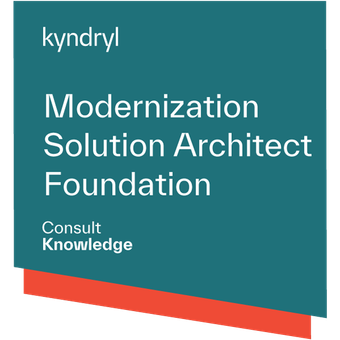
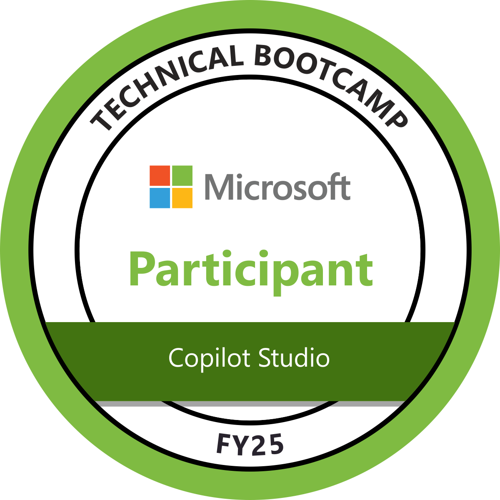
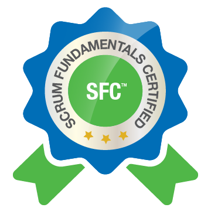

AI SOLUTION ARCHITECTURE
Hazael
Pérez.
Associate Director
Customer Technology Advisor — Cloud
I specialize in AI solution design on Microsoft Azure and work with AWS and Google Cloud. I started in software development and moved into architecture, technical sales and AI transformation.
Monterrey, Nuevo León, Mexico
Highlights
USD 90M
Total contract value for a closed deal with a global bottler.
USD 9M
Total contract value for a closed deal with an airline.
50+
Internal AI projects in the portfolio I built at Onesec.
8+ years in software and cloud, with 50+ demos and proofs of concept designed and delivered across cloud and AI.
Professional experience
Associate Director · Customer Technology Advisor — CloudKyndryl – Present
Customer-facing solution design for enterprise sales at Kyndryl Mexico.
- Lead technical discovery and turn client requirements into cloud and modernization architectures, project scope and cost estimates.
- Compare design options and explain trade-offs in cost, security and operations to clients and sales teams.
- Build proofs of concept to validate designs and provide architecture expertise to delivery teams.
Lead Cloud Solutions ArchitectDotech –
Designed and documented cloud architectures, evaluated emerging technologies and worked with engineering teams on solution design.
AI Transformation Unit ManagerOnesec –
Led the AI Transformation Unit and built a portfolio of 50+ internal AI projects. Scoped use cases across Microsoft Copilot, Azure AI Foundry, Azure OpenAI and Google Cloud.
R&D and CX Director / Head of PresalesiNBest –
- Designed retrieval-augmented generation (RAG) solutions using vector search and vector databases.
- Worked on real-time audio applications powered by large language models (LLMs).
- Led R&D and technical presales, developed reference architectures and advised clients on Azure and AWS.
Big Wave Data
As an entrepreneur and equity partner, I helped grow Big Wave Data from a startup into the #1 partner of our distributor CompuSoluciones and one of Mexico’s leading cloud partners in six years. I led technical strategy as the team grew from six to nearly 30 in three years, and supported due diligence and the sale after an investor approached us.
My AI work at Big Wave Data covered machine learning, data analysis, computer vision and advanced Modular Reasoning, Knowledge and Language (MRKL) systems.
Head of R&DBig Wave Data — by iNBest · Software Development –
Led development teams, evaluated new technologies, reviewed application architecture and database design, and ran technical presales.
Fullstack Cloud DeveloperBig Wave Data · Equity Partner –
Led technical teams across IoT and software development, designed cloud solutions and supported presales for selected clients.
Cloud DeveloperBig Wave Data –
Built Azure applications with .NET and SQL Server, optimized database routines and developed mobile geolocation features.
Technical skills
Cloud platforms
Software engineering
Solution design & presales
Credentials & education
CREDENTIALS
-

Modernization Solution Architect FoundationKyndryl · Application modernization using the Kyndryl Agentic AI Framework.
-
Microsoft Certified: Azure Fundamentals
-

Copilot Studio Technical BootcampMicrosoft · FY25 participant
-

Scrum Fundamentals Certified (SFC)
EDUCATION
Bachelor’s degree in Computer Systems
TecNM · Tamazunchale Campus
–LANGUAGES
- Spanish
- Native
- English
- Professional proficiency
COMMUNITY
- Microsoft Tech Days speaker
- Hackathon mentor
- Technical workshop facilitator